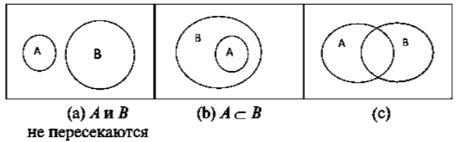
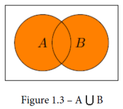
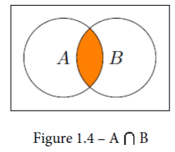
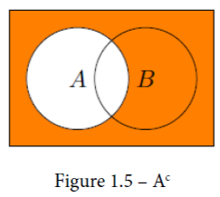
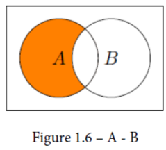

Множества#
”Множество людей могут говорить хорошие вещи, но очень немногие умеют слушать, так как это требует силы ума.” (Р. Тагор)
С понятием множества в программировании вы уже знакомы, если применяли стандартный контейнер set. Тем не менее, понятие множества не исчерпывается конкретным способом реализации в виде структуры данных. Множество - это универсальная абстракция: любой набор объектов, порядок следования которых не имеет существенного значения.
В этой абстракции, с практической точки зрения, должны быть реализованы операции доступа:
проверка принадлежности заданного элемента множеству;
проверка включения одного множества в другое множество
и операции модификации:
добавление элемента в множество;
извлечение элемента из множества,
а также операции над множествами:
объединение двух множеств;
пересечение двух множеств;
разность двух множеств.
В объектно-ориентированном программировании указанная абстракция может быть инкапсулирована в соответствующем классе, но не обязательно. Любые данные, расположенные в любом порядке, - это уже множество. Даже если они хранятся в обычном массиве или списке.
Понятие множества#
Источники: Кузнецов - Дискретная математика для инженера; Казанский - Дискретная математика: краткий курс
Основатель теории множеств Георг Кантор определял множество так: “многое, понимаемое как единое”.
Примеры. 1. Хоккейная команда “Адмирал” - это множество хоккеистов.
Товары, которые покупатель сложил в корзину в интернет-магазине, образуют множество.
Все функции, объявленные в скрипте на Python, образуют множество. Функции без параметров - подмножество данного множества.
Рассмотрим множество \(A\) имён переменных, используемых в функциях, и множество имён переменных \(B\), используемых в основном коде. Желательно, чтобы у этих множеств не было общих элементов. На языке теории множеств говорят, что множества не пересекаются: \(A \cap B = \varnothing\).
Запишем свойство отсутствия пересечения у двух множеств \(A\) и \(B\) на языке логики предикатов:
\(A \cap B = \varnothing \quad \Longleftrightarrow \quad \neg \exists x\, (x \in A \land x \in B)\)
Другим способом:
\(A \cap B = \varnothing \quad \Longleftrightarrow \quad \forall x\, (x \notin A \vee x \notin B)\)
Множество решений уравнения \(\sin x = 1\) в действительных числах:
\(M = \{x \in \mathbb R \colon \sin x = 1\} = \{x \in \mathbb R \colon \exists k \in \mathbb Z \, (x = \pi/2 + 2k\pi)\}\)
Включение и равенство множеств#
Равенство двух множеств \(A\) и \(B\) означает следующее: всякий элемент множества \(A\) принадлежит множеству \(B\), и всякий элемент множества \(B\) принадлежит множеству \(A\). Иными словами, равные множества состоят из одних и тех же элементов.
Пример. Множество равнобедренных треугольников равно множеству треугольников с двумя равными углами.
Множество \(A\) включено в множество \(B\) (является его подмножеством: \(A \subset B\)), если всякий элемент множества \(A\) принадлежит множеству \(B\).
Запишем это определение на языке логики предикатов:
\(A \subset B \quad \Longleftrightarrow \quad \forall x\, (x \in A \to x \in B)\)
Пустое множество \(\varnothing\) - это множество, не содержащее элементов.
Докажем, что \(\varnothing \subset A\) для любого множества \(A\). В самом деле,
\(\forall x\, (x \in \varnothing \to x \in A) = (\forall x\, (0 \to (x \in A))) = \forall x\, 1 = 1\)
Характеристический вектор#
Пусть задано конечное универсальное множество \(U\), в котором \(n\) элементов (пишут: \(|U| = n\)). Множество возможных подмножеств множества \(U\) называется булеаном (обозначение \(\mathcal P(U)\) или \(2^U\)). В булеане \(2^n\) элементов.
Например, если \(U = \{1, 2, 3\}\), то \(\mathcal P(U) = \{ \varnothing, \{1\}, \{2\}, \{3\}, \{1, 2\}, \{1, 3\}, \{2, 3\}, \{1, 2, 3\} \}\).
Чтобы задать любое множество из \(\mathcal P(U)\), можно пронумеровать все \(n\) элементов множества \(U = \{a_1, a_2, \ldots, a_n\}\) и составить таблицу, в которой указана принадлежность каждого элемента универсума \(U\) множеству \(A\).
Пример. В следующей таблице задано множество \(A = \{a_2, a_4\}\).
\(a_1\) |
\(a_2\) |
\(a_3\) |
\(a_4\) |
|---|---|---|---|
0 |
1 |
0 |
1 |
Двоичный вектор, который задает некоторое множество \(A\) (при выбранной нумерации элементов множества \(U\)) называется характеристическим вектором множества \(A\).
Диаграммы Венна#
Диаграмма Венна позволяет получить визуальное представление множеств в виде замкнутых областей на плоскости. Универсальное множество представляется внутренними точками прямоугольника, а другие множества представляются точками кругов, лежащих внутри этого прямоугольника.
На рисунке показаны три случая взаимосвязи двух множеств.

Операции над множествами#
Источник: White, Ray - Practical discrete mathematics
Всякому подмножеству \(A\) некоторого универсума \(U\) соответствует одноместный предикат (характеристическое свойство) \(P(x) = \{x \in U \colon x \in A\}\). И обратно, всякий одноместный предикат \(P(x)\), определенный на множестве \(U\), задает множество (область истинности предиката) \(I_P = \{x \in U \colon P(x)\}\). (В логике множество составляет объём понятия, а его характеристическое свойство составляет содержание понятия.)
Пусть \(A, B \subset U\) - два множества. Применим к их характеристическим свойствам операцию логического сложения (дизъюнкции). Получим множество \(A \cup B\), называемое объединением множеств \(A\) и \(B\). По определению,
\(A \cup B = \{x \colon x \in A \vee x \in B\}\)

Если применить к характеристическим свойствам множеств операцию конъюнкции, то получится множество, состоящее из элементов, принадлежащих одновременно к обоим множествам. Это пересечение множеств \(A \cap B\). По определению,
\(A \cap B = \{x \colon x \in A \land x \in B\}\)

Если инвертировать характеристическое свойство множества \(A\), получим его дополнение \(\overline{A}\). Другое обозначение: \(A^c\). По определению,
\(\overline{A} = \{x \in U \colon x \notin A\}\)

Разность множеств \(A \setminus B\) состоит из всех элементов множества \(A\), не принадлежащих множеству \(B\). По определению, \(A \setminus B = A \cap \overline{B}\).

Упражнение. Запишите характеристическое свойство разности двух множеств:
\(A \setminus B = \{x \colon \; {\color{red} ? }\; \}\)